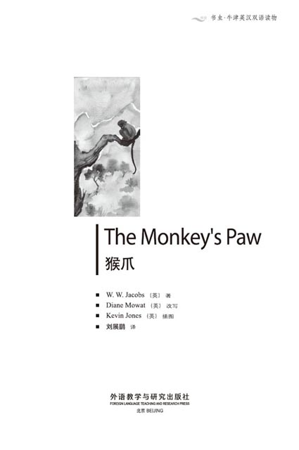
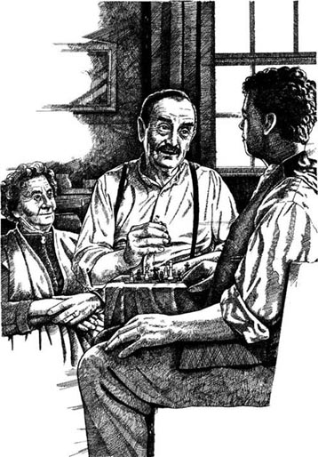
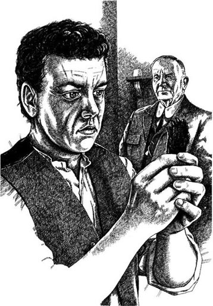
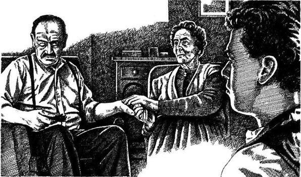
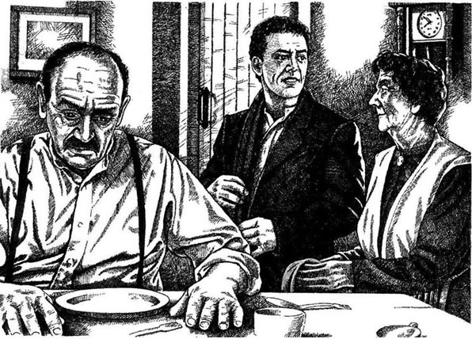
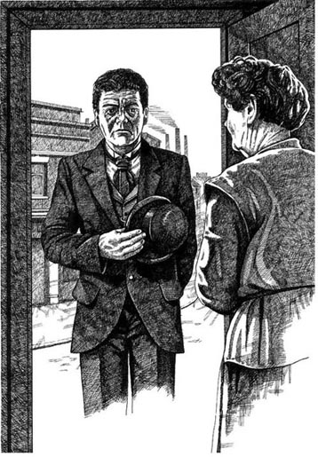
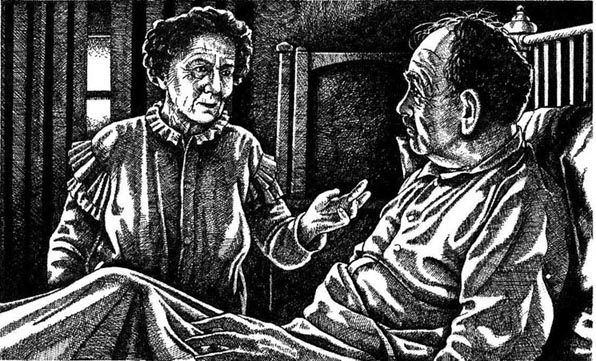
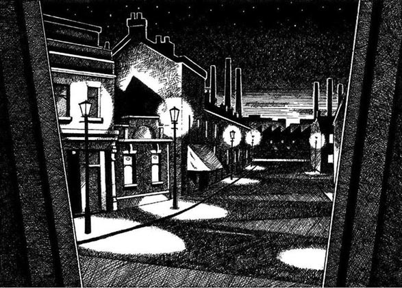
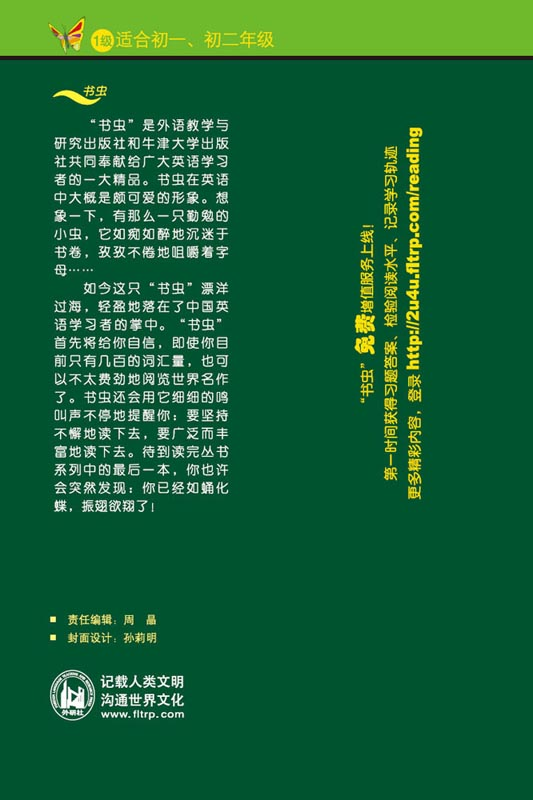

扉页

版权页
京权图字：01-97-0356
Originally published by Oxford University Press, Great Clarendon Street, Oxford. © 1992
This edition is licensed for sale in the People's Republic of China only and not for export therefrom.
'Oxford' is a registered trademark of Oxford University Press.
只限中华人民共和国境内销售，不包括香港特别行政区、澳门特别行政区及台湾省。不得出口。
图书在版编目（CIP）数据
猴爪：英汉对照／（英）雅各布斯（Jacobs，W. W.）著；（英）莫厄特（Mowat，D.）改写；刘展鹏译．—北京：外语教学与研究出版社，1998.11（2014.12重印）
（书虫·牛津英汉双语读物）
书名原文：The Monkey's Paw
ISBN 978-7-5600-1376-3
Ⅰ．猴… Ⅱ．①雅…②莫…③刘… Ⅲ．小说—英国—对照读物—英、汉 Ⅳ．H319.4：I
中国版本图书馆CIP数据核字（1998）第01445号
出版人：蔡剑峰
责任编辑：周 晶
封面设计：孙莉明
出版发行：外语教学与研究出版社
社 址：北京市西三环北路19号（100089）
网 址：http://www.fltrp.com
版 次：1998年11月第1版
书 号：ISBN 978-7-5600-1376-3
* * *
凡侵权、盗版书籍线索，请联系我社法律事务部
举报电话：（010）88817519 电子邮箱：banquan@fltrp.com
法律顾问：立方律师事务所 刘旭东律师
中咨律师事务所 殷 斌律师
简介
简 介
你可以许三个愿，你可以要世界上存在的三样东西，你的愿望将变为现实。你会说，“这在现实世界是不可能发生的。”那么，好好想想吧。你能要什么？你想要什么？
当你许愿的时候，这仅仅是个开始。当你改变了一样东西，接着你会改变世界上的每一样东西。一个变化引起另一个变化。谁又能知道这些变化又将在哪里结束？
在这个故事中，怀特一家可以许三个愿，但他们犯了一个小小的错误。他们的第一个愿望变成了现实。接着，顷刻间，他们的生活陷入了一场可怕的恶梦……
雅各布斯（1863—1943）是一位短篇小说作家。《猴爪》是他的最有名的小说之一。
目录
chapter-a033_ 1
Chapter 1
It was cold and dark out in the road and the rain did not stop for a minute. But in the little living-room of number 12 Castle Road it was nice and warm. Old Mr White and his son, Herbert, played chess and Mrs White sat and watched them. The old woman was happy because her husband and her son were good friends and they liked to be together. 'Herbert's a good son,' she thought. 'We waited a long time for him and I was nearly forty when he was born, but we are a happy family.' And old Mrs White smiled.
It was true. Herbert was young and he laughed a lot, but his mother and his father laughed with him. They had not got much money, but they were a very happy little family.
The two men did not talk because they played carefully. The room was quiet, but the noise of the rain was worse now and they could hear it on the windows. Suddenly Old Mr White looked up. 'Listen to the rain!' he said.
'Yes, it's a bad night,' Herbert answered. 'It's not a good night to be out. But is your friend, Tom Morris, coming tonight? '
'Yes, that's right. He's coming at about seven o'clock,' the old man said. 'But perhaps this rain...'
Mr White did not finish because just then the young man heard a noise.
'Listen!' Herbert said. 'There's someone at the door now.'

'I didn't hear a noise,' his father answered, but he got up from his chair and went to open the front door. Mrs White got up too and began to put things away.
Mr White said, 'Come in, come in, Tom. It's wonderful to see you again. What a bad night! Give me your coat and then come into the living-room. It's nice and warm in there.'
The front door was open, and in the living-room Mrs White and Herbert felt the cold. Then Mr White came back into the living-room with a big, red-faced man.
'This is Tom Morris,' Mr White told his wife and son. 'We were friends when we were young. We worked together before Tom went to India. Tom, this is my wife and this is our son, Herbert.'
'Pleased to meet you,' Tom Morris said.
'Pleased to meet you, Mr Morris,' Mrs White answered. 'Please come and sit down.'
'Yes, come on, Tom,' Mr White said. 'Over here. It's nice and warm.'
'Thank you,' the big man answered and he sat down.
'Let's have some whisky,' Old Mr White said. 'You need something to warm you on a cold night.' He got out a bottle of whisky and the two old friends began to drink and talk. The little family listened with interest to this visitor from far away and he told them many strange stories.
castle n. a very large strong building to defend against attack. 城堡。
chess n. 象棋。
nearly adv. almost 几乎，差不多，将近。
suddenly adv. 突然。
look up 向上看，抬头。
listen to 听。
noise n. sound. 声音，嘈杂声。
get up 站起来。
chair n. 椅子。
put away 整理，把……放在一边。
wonderful adj. 漂亮的，精彩的。
come back 返回。
sit down 坐下。
whisky n. a kind of spirits. 威士忌酒。
visitor n. a person who visits a place. 造访者。
strange adj. 奇怪的。
1
1
外面的马路上又冷又黑，雨一直下个不停。但城堡路12号的一间小客厅里却蛮暖和。老怀特先生和他的儿子赫伯特在下象棋，怀特太太坐在一旁看着他们。老妇人因她的丈夫和儿子是好朋友并乐于在一起而高兴。“赫伯特是一个好孩子，我们等了很长时间才要到的孩子，他出生的时候我都快40岁了，但我们的家庭很幸福。”老怀特太太想着、想着，脸上露出了笑容。
这是事实，赫伯特年轻又爱笑，他的母亲和父亲也总跟着乐。他们并没有很多钱，但他们有一个非常幸福的小家庭。
两个男人无言地下着棋。房间里很安静，但雨声现在更大了，他们能听到雨点打在窗上的声音。突然，老怀特先生抬起头说：“听听雨声！”
“是的，这是一个糟糕的夜晚，”赫伯特答道，“这样的夜晚不宜外出，但你的朋友汤姆·莫里斯今晚不是要来吗？”
“是的，你说得对。他将在7点钟左右到，但也许这雨……”老汉说。
怀特先生没有说下去，因为就在这时，年轻人听到了一种声音。
“听！”赫伯特说，“现在门外有人。”
他的父亲答道：“我没有听到声音。”但他还是从椅子上起来去开门，怀特太太也站起来开始收拾东西。
怀特先生说：“汤姆，快请进，快请进。又见到你真高兴。多么糟糕的夜晚！把外套给我，到客厅里去，那儿暖和。”
前门打开了，客厅里的怀特太太和赫伯特感觉到一阵寒气。怀特先生领着一位高大的红脸汉子回到了起居室。
“这是汤姆·莫里斯，”怀特先生告诉他的太太和儿子，“我们年轻的时候是好朋友，在汤姆去印度之前我们在一起工作过。汤姆，这是我太太，这是我们的儿子，赫伯特。”
“很高兴见到你们。”汤姆·莫里斯说。
“我们也很高兴见到你，莫里斯先生。”怀特太太答道，“请过来坐下吧。”
“对，过来，汤姆，到这儿来，这儿舒服暖和一点。”怀特先生说。
“谢谢你。”高大的汉子答应着坐下了。
“我们喝一点威士忌吧，”老怀特先生说，“这样寒冷的夜晚，你需要一点东西暖和暖和身子。”他拿出一瓶威士忌，两位老朋友边喝边谈。这个小家庭饶有兴趣地倾听着这位来自远方的造访者告诉他们许多离奇的故事。
chapter-a033_ 2
Chapter 2
After some time Tom Morris stopped talking and Mr White said to his wife and son, 'Tom was a soldier in India for twenty-one years. India is a wonderful country.'
'Yes,' Herbert said. 'I'd like to go there.'
'Oh, Herbert!' his mother cried. She was afraid because she did not want to lose her son.
'I wanted to go to India too,' her husband said, 'but...'
'It's better for you here!' the soldier said quickly.
'But you saw a lot of strange and wonderful things in India. I want to see them too one day,' Mr White said.
The soldier put down his whisky. 'No!' he cried. 'Stay here!'
Old Mr White did not stop. 'But your stories were interesting,' he said to Tom Morris. 'What did you begin to say about a monkey's paw?'
'Nothing!' Morris answered quickly. 'Well... nothing important.'
'A monkey's paw?' Mrs White said.
'Come on, Mr Morris! Tell us about it,' Herbert said.
Morris took his whisky in his hand, but suddenly he put it down again. Slowly he put his hand into the pocket of his coat and the White family watched him.
'What is it? What is it?' Mrs White cried.

Morris said nothing. He took his hand out of his pocket. The White family watched carefully—and in the soldier's hand they saw something little and dirty.
Mrs White moved back, afraid, but her son, Herbert, took it and looked at it carefully.
'Well, what is it?' Mr White asked his friend.
'Look at it,' the soldier answered. 'It's a little paw... a monkey's paw.'
'A monkey's paw!' Herbert said—and he laughed. 'Why do you carry a monkey's paw in your pocket, Mr Morris?' he asked the old soldier.
'Well, you see,' Morris said, 'this monkey's paw is magic!'
Herbert laughed again, but the soldier said, 'Don't laugh, boy. Remember, you're young. I'm old now and in India I saw many strange things.' He stopped talking for a minute and then he said, 'This monkey's paw can do strange and wonderful things. An old Indian gave the paw to one of my friends. My friend was a soldier too. This paw is magic because it can give three wishes to three people.'
'Wonderful!' Herbert said.
'But these three wishes don't bring happiness,' the soldier said. 'The old Indian wanted to teach us something—it's never good to want to change things.'
'Well, did your friend have three wishes?' Herbert asked the old soldier.
'Yes,' Morris answered quietly. 'And his third and last wish was to die!'
Mr and Mrs White listened to the story and they felt afraid, but Herbert asked, 'And did he die?'
'Yes, he did,' Morris said. 'He had no family, so his things came to me when he died. The monkey's paw was with his things, but he told me about it before he died,' Tom Morris finished quietly.
'What were his first two wishes, then?' Herbert asked. 'What did he ask for?'
'I don't know. He didn't want to tell me,' the soldier answered.
For a minute or two everybody was quiet, but then Herbert said, 'And you, Mr Morris: did you have three wishes?'
'Yes, I did,' Morris answered. 'I was young. I wanted many things—a fast car, money...' Morris stopped for a minute and then he said with difficulty, 'My wife and my young son died in an accident in the car. Without them I didn't want the money, so, in the end, I wished to lose it. But it was too late. My wife and my child were dead.'
The room was very quiet. The White family looked at the unhappy face of the old soldier.
Then Mr White said, 'Why do you want the paw now? You don't need it. You can give it to someone.'
'How can I give it to someone?' the soldier said. 'The monkey's paw brings unhappiness with it.'
'Well, give it to me,' Mr White said. 'Perhaps this time it...'
'No!' Tom Morris cried. 'You're my friend. I can't give it to you.' Then, after a minute, he said, 'I can't give it to you, but, of course you can take it from me. But remember—this monkey's paw brings unhappiness!'
Old Mr White did not listen and he did not think. Quickly, he put out his hand, and he took the paw.
Tom Morris looked unhappy, but Mr White did not want to wait.
'What do I do now?' he asked his friend.
'Yes, come on, Father,' Herbert said. 'Make a wish!' And he laughed.
The soldier said nothing and Mr White asked him again, 'What do I do now?'
At first the old soldier did not answer, but in the end he said quietly, 'OK. But remember! Be careful! Think before you make your wish.'
' Yes, yes,' Mr White said.
'Take the paw in your right hand and then make your wish, but...' Tom Morris began.
'Yes, we know,' Herbert said. 'Be careful!'
Just then old Mrs White stood up and she began to get the dinner. Her husband looked at her. Then he smiled and said to her, 'Come on. Help me! What can I wish for? We need money, of course.'
Mrs White laughed, but she thought for a minute and then she said, 'Well, I'm getting old now and sometimes it's difficult to do everything. Perhaps I need four hands and not two. Yes, ask the paw to give me two more hands.'
'OK, then,' her husband said, and he took the monkey's paw in his right hand. Everybody watched him and for a minute he waited. Then he opened his mouth to make his wish.
Suddenly Tom Morris stood up. 'Don't do it!' he cried.
The old soldier's face was white. Herbert and his mother laughed, but Mr White looked at Tom's face.
Old Mr White was afraid and he put the monkey's paw into his pocket.
After a minute or two they sat down at the table and began to have dinner. The soldier told the family many strange and wonderful stories about India. They forgot the monkey's paw, and because the soldier's stories were interesting, they asked him many questions about India. When Tom Morris stood up to leave, it was very late.
'Thank you for a very nice evening,' Morris said to the family. 'And thank you for a very good dinner,' he said to Mrs White.
'It was a wonderful evening for us, Tom,' Old Mr White answered. 'Your stories were very interesting. Our life isn't very exciting and we don't have the money to visit India, so please come again soon. You can tell us some more stories about India.'
Then the old soldier put on his coat. He said goodbye to the White family, and went out into the rain.
soldier n. 战士，士兵。
country n. 国家。
cry v. 哭，喊叫。
quickly adv. fast. 快速地。
put down 放下。
important adj. 重要的。
come on 继续。
pocket n. 衣袋，口袋。
dirty adj. not clean. 脏的。
carry v. to take with. 带着。
magic adj. not normal or natural. 有魔力的。
remember v. 记住。
paw n. 爪子。
Indian n. people from India. 印度人。
wish n. hope. 愿望。
never adv. 从来不。
die v. 死亡。
quietly adv. without making much noise. 静静地。
ask for 要求，索要。
difficulty n. the state of being not easy. 困难。
accident n. something that happens without anyone planning or intending it. 事故，意外。
unhappy adj. not happy. 不高兴的。
unhappiness n. 不幸。
perhaps adv. maybe. 也许。
laugh v. 笑。
of course certainly. 当然。
everything pron. 每样东西。
then adv. 接着，然后。
forget v. to be unable to remember facts, information. 忘记。
interesting adj. exciting, keeping one's attention. 有趣的。
exciting adj. stimulating. 令人兴奋的，刺激的。
dinner n. 晚餐。
2
2
不知过了多长时间，汤姆·莫里斯停止了交谈。怀特先生告诉他太太和儿子：“汤姆到印度服兵役有21年了。印度是一个非常有趣的国家。”
“是的，”赫伯特说，“我想去那儿。”
“哦，赫伯特！”他母亲惊叫起来。她非常害怕，因为她不想失去儿子。
“我也想去印度，”她的丈夫说，“不过……”
“对你来说，这儿很不错！”老兵很快地说。
“你在印度看到了那么多奇怪又有趣的东西，我想有一天也能去看看。”怀特先生说。
老兵放下威士忌。“不！”他嚷道，“待在这儿！”
老怀特先生并没有停下，“你的故事很有趣，”他对汤姆·莫里斯说，“关于猴爪的事你想告诉我们什么？”
“没什么！”莫里斯很快地回答，“真的……无关紧要。”
“猴爪？”怀特太太惊问。
“继续给我们讲讲吧，莫里斯先生。”赫伯特说。
莫里斯用手拿起他的威士忌，但突然又把它放下，然后慢慢地把手伸进他的外套口袋。怀特一家看着他。
“那是什么东西？那是什么东西？”怀特太太叫道。
莫里斯什么也没说，他把手拿出口袋。怀特一家仔细地看着——在老兵手里他们看到了一个又小又脏的东西。
怀特太太害怕地缩了回来，但她的儿子赫伯特却把那东西拿过来仔细地看。
“喂，那是什么？”怀特先生问他的朋友。
“看看吧，”老兵答道，“它是一只小爪子啊……一只猴子的爪子。”
“一只猴子的爪子！”赫伯特说着大笑起来。“为什么你在口袋里带着猴爪，莫里斯先生？”他问老兵。
“你要明白，这个猴爪是有魔力的！”莫里斯说。
赫伯特又笑了，但老兵认真地说：“孩子，别笑了，记住，你还年轻，可我现在老啦，我曾在印度见到了很多奇怪的事情。”他停了一会儿，接着说，“这个猴爪能做奇怪而又奇妙的事情，一个印度老人把这个猴爪给了我的一位朋友，我的朋友也是一个当兵的。这猴爪有魔力是因为它能满足三个人每人提出的三个愿望。”
“太妙了！”赫伯特说。
“但这三个愿望并不能带来幸福。”老兵提醒说，“印度老人想告诉我们——想改变现实并不一定是好事。”
“那么，你的朋友也有三个愿望吗？”赫伯特问老兵。
“是的，”莫里斯静静地回答，“并且他的第三个也是最后一个愿望就是去死！”
怀特先生和怀特太太听了这个故事感到有些害怕，赫伯特问：“他死了吗？”
“是的，他死了，”莫里斯说，“他没有家，所以他死的时候把他的东西全给了我，猴爪是这些东西的附带品，不过他死之前就告诉过我有关猴爪的故事。”汤姆·莫里斯静静地说。
“那么，他的头两个愿望是什么？”赫伯特追问，“他要求什么？”
“我不知道，他不想告诉我。”老兵回答说。
一两分钟里大家都沉默着，然而赫伯特又问，“莫里斯先生，你有三个愿望吗？”
“是的，我有过，”莫里斯问答说，“我年轻时，我想要很多东西——一辆跑车，还有钱……”莫里斯顿了一会儿，然后很艰难地说，“我的妻子和我年轻的儿子在一次车祸中丧生，没有了他们我不再想要钱，以至到最后，我希望一无所有，但为时已晚，我的妻子和孩子并不能死而复生。”
房子里很静，怀特一家看着老兵苦楚的脸。
接着，怀特先生问，“为什么你现在还要这个爪子呢？你不需要它，你可以把它送给别人。”
“我怎么能送给别人呢？”老兵说，“猴爪会给拥有它的人带来痛苦。”
“那么，给我吧，”怀特先生说，“也许这次它……”
“不！”汤姆·莫里斯叫道，“你是我的朋友，我不能把它给你。”过了一会儿，他说，“我不能把它给你，但你可以从我身边把它拿走，不过要记住——猴爪会给你带来痛苦！”
老怀特没有听进去也没有仔细想，很快地伸出手拿走了猴爪。
汤姆·莫里斯看起来不高兴，但怀特先生等不及了。
“我现在能做什么？”他问他的朋友。
“对，这样吧，父亲，”赫伯特说，“许个愿吧！”赫伯特笑了。
老兵什么也不说，怀特先生又问他，“我现在能做些什么呢？”
开始，老兵什么也不回答，最后他静静地说，“好吧，但记住要小心，在你许愿之前要考虑好。”
“行，行。”怀特先生说。
“用右手拿着猴爪，然后许愿，但是……”汤姆·莫里斯又开始了他那一套。
“行了，我们知道。”赫伯特说，“要小心！”
这时怀特太太站起来去做晚饭。她的丈夫看着她，并笑着对她说：“过来帮帮我，我能许一个什么愿呢？当然，我们需要钱。”
怀特太太笑了起来，她想了一会儿说，“是的，我开始变老啦，有时做事情很吃力。可能我需要四只手而不是两只手，那么好吧，让猴爪多给我两只手。”
“好吧。”她的丈夫说，他把猴爪放在右手中。每个人都看着他，他等了一会儿然后张开嘴开始许愿。
突然，汤姆·莫里斯站起来。“不要这样！”他喊道。
老兵的脸变白了。赫伯特和他的母亲笑了起来，但怀特先生却看着汤姆的脸。
老怀特先生害怕了，他把猴爪放进了口袋。
一两分钟后，他们坐在桌旁开始吃晚饭。老兵告诉这一家许多有关印度的新奇的故事。他们暂时忘了猴爪，因为老兵的故事很有趣，他们问了他许多有关印度的问题。当汤姆·莫里斯起来要走时，天色已经很晚了。
“感谢有这么一个美好的夜晚，”莫里斯对这一家人道谢，“感谢有这样一顿美好的晚餐，”他对怀特太太说。
“汤姆，对我们来说这也是一个美好的夜晚，”老怀特先生回答道，“你的故事很有趣。我们的生活很平淡，我们没有钱去印度，所以请你尽快再来，你可以告诉我们更多关于印度的故事。”
接着老兵穿上衣服，和怀特一家道别后，他就消失在雨中。
chapter-a033_ 3
Chapter 3
It was nearly midnight. In their warm living-room, the two old people and their son sat and talked about the soldier's stories.
'India is a wonderful country,' Mr White said. 'What exciting stories! It was a good evening.'
Mrs White stood up to take some things into the kitchen, but she stopped and listened to Herbert and his father.
'Yes,' Herbert said. 'Morris told some interesting stories, but, of course, some of them weren't true.'
'Oh Herbert!' Mrs White said.
'Well, Mother, that story about the monkey's paw wasn't true. A dirty little monkey's paw isn't magic! But it was a good story. ' And Herbert smiled.
'Well, I think you're right, Herbert,' his mother said.
'I don't know,' Mr White said quietly. 'Perhaps the story was true. Strange things can happen sometimes.'
Mrs White looked at her husband. 'Did you give some money to Tom Morris for that paw?' she asked. 'We don't have money to give away for nothing!' Mrs White was angry now.
'Well, yes,' her husband answered. 'I did, but not much, and at first he didn't want to take it. He wanted the monkey's paw.'

'Well, he can't have it,' Herbert laughed. 'It's our paw now and we're going to be rich and happy. Come on, Father. Make a wish!'
Old Mr White took the paw from his pocket. 'OK, Herbert, but what am I going to ask for? I have everything—you, your mother. What do I need?'
'Money, of course,' Herbert answered quickly. 'We need money! You're always thinking about money. That's because we haven't got very much of it. With money you can pay for this house. It can be your house! Go on, Father, wish for thirty thousand pounds!'
Herbert stopped talking and his old father thought for a minute. The room was quiet and they could hear the rain on the windows.
Then Mr White took the monkey's paw in his right hand. He was afraid, but he looked at his wife and she smiled at him.
'Go on,' she said.
Slowly and carefully Mr White said, 'I wish for thirty thousand pounds.'
Suddenly he gave a cry and Mrs White and Herbert ran to him.
'What's the matter, Father?' Herbert asked.
'It moved!' Mr White cried. 'The monkey's paw—it moved!'
They looked at the paw. It was now on the floor and not in the old man's hand. The family watched it, and they waited—but it did not move again.
So the little family sat down again and they waited. Nothing happened. The noise of the rain on the windows was worse now and their little living-room did not feel nice and warm.
Mrs White said, 'It's cold. Let's go to bed.'
Mr White did not answer and in the end Herbert said, 'Well, there's no money, Father. Your friend's story wasn't true.' But Mr White did not answer. He sat quietly and said nothing.
After some time Mrs White said to her husband, 'Are you OK?'
'Yes, yes,' the old man answered, 'but for a minute or two I was afraid.'
'Well, we needed that money,' Mrs White said, 'but we aren't going to get it. I'm tired. I'm going to bed.'
After Mrs White went to bed, the two men sat and smoked for some time.
Then Herbert said, 'Well, Father, I'm going to bed too. Perhaps the money is in a bag under your bed! Good night, Father.' And Herbert laughed and went out of the room.
Old Mr White sat in the cold living-room for a long time. The candle died and it was dark. Suddenly, the old man saw a face at the window. Quickly, he looked again, but there was nothing there. He felt afraid. Slowly he stood up and left the cold, dark room.
midnight n. 午夜，深夜。
kitchen n. 厨房。
sometimes adv. 有时。
angry adj. very annoyed. 恼怒的。
rich adj. having a lot of money or valuable possessions. 富有的。
pound n. 英镑。
move v. to change place. 移动。
floor n. 地板。
in the end at last 最终，最后。
true adj. based on facts. 真实的。
candle n. 蜡烛。
3
3
已经快半夜了。在他们温暖的客厅里，两位老人和他们的儿子在谈论着老兵的故事。
“印度是一个神奇的国家，”怀特先生说，“多么激动人心的故事！多么美好的夜晚。”
怀特太太站起来要拿东西进厨房，但她却停下来听赫伯特和他父亲谈话。
“是的，”赫伯特说，“莫里斯讲了一些有趣的故事，但是，有些东西不一定是真实的。”
“哦，赫伯特！”怀特太太说。
“是的，母亲，有关猴爪的故事不是真的。一只脏的小猴爪哪会有魔力！但这个故事很好。”赫伯特笑着说。
“嗯，我想你是对的，赫伯特。”他母亲说。
“我不知道，”怀特先生平静地说，“也许这个故事是真的。怪事有时也会发生。”
怀特太太看着她的丈夫。“你从汤姆·莫里斯那儿拿来猴爪给他钱了吗？”她问。“我们没有钱去为无价值的东西付出！”怀特太太现在发怒了。
“是的，”她丈夫回答说，“我付钱了，但不多。开始他不想要钱，他要他的猴爪。”
“好啦，莫里斯不再拥有猴爪了，”赫伯特笑了起来。“猴爪现在属于我们，我们将变得富有幸福。来吧，父亲。许个愿！”
老怀特先生从口袋里拿出猴爪。“好吧，赫伯特，但我还要什么呢？我拥有一切——你，你母亲。我需要什么呢？”
“当然是钱，”赫伯特迅速回答，“我们需要钱！你总是为钱而费尽心思，那是因为我们没有多少钱。有钱你能买房子。真正属于你的房子！来吧，父亲，许愿吧，愿咱们有30,000英镑！”
赫伯特停止了讲话，他的老父亲思考了一会儿。房子里很安静，他们能够听到雨点打在窗户上的声音。
接着怀特先生拿出猴爪放在右手中。他很害怕，他看着妻子；他的妻子冲他微笑。
“说吧。”她说。
怀特先生缓慢而又小心地说：“我希望有30,000英镑。”
突然，他发出一声尖叫，怀特太太和赫伯特向他跑过去。
“发生什么事了，父亲？”赫伯特问。
“它动起来了！”怀特先生喊道。“那猴爪——它动起来了！”
他们看着爪子。爪子现在不在老人手里而在地板上。这一家看着，等着，但猴爪已不再动了。
于是，这个小家庭又坐下来等。但什么也没有发生。雨声现在变得更急，他们的小客厅已感觉不到舒适暖和了。
怀特太太说：“天冷了，我们睡觉吧。”
怀特先生不答话，最后赫伯特说：“瞧，没有钱出现，父亲，你朋友讲的故事不是真的。”但怀特先生还是不答话，他静静地坐着一言不发。
一会儿过后，怀特太太问她丈夫：“你没事吧？”
“是的，是的，”老人回答道，“但有一两分钟我很害怕。”
“不错，我们需要钱，”怀特太太说，“但我们不会凭空拿到钱。我累了，我要睡觉。”
怀特太太上床睡觉之后，两个男人坐着吸了一会儿烟。
赫伯特说：“父亲，我也要睡觉了。也许钱就在你床下的一个袋子里！晚安，父亲。”赫伯特笑着走出了房间。
老怀特先生在寒冷的客厅里坐了很长时间。蜡烛灭了，屋里黑了。突然，老人看见窗户上有一张脸。很快，他又看了一眼，但那儿什么也没有。他很害怕，他慢慢地站起来，离开了寒冷、漆黑的房间。
chapter-a033_ 4
Chapter 4
The next morning the winter sun came through the window and the house felt nice and warm again. Mr White felt better and he smiled at his wife and son. The family sat down to have breakfast and they began to talk about the day. The monkey's paw was on a little table near the window, but nobody looked at it and nobody thought about it.
'I'm going to the shops this morning,' Mrs White said. 'I want to get something nice for dinner. Are you going to come with me?' she asked her husband.
'No, I'm going to have a quiet morning. I'm going to read,' her husband answered.
'Well, I'm not going to go out this evening,' Herbert said, 'so we can go to bed early tonight. We were very late last night.'
'And we aren't going to have stories about monkey's paws!' Mrs White said. She was angry. 'Why did we listen to your friend?' she asked her husband. 'A monkey's paw can't give you things!' She stopped but the two men did not answer her. 'Thirty thousand pounds!' she said quietly. 'We needed that money.'
Just then Herbert looked at the clock and stood up. 'I'm going to work,' he said. 'Perhaps the postman has got the money for you in a letter. Remember, I want some of it too!' Herbert laughed and his mother laughed too.

'Don't laugh, son,' Mr White said. 'Tom Morris is an old friend and he thinks the story is true. Perhaps it is.'
'Well, leave some of the money for me,' Herbert laughed again.
His mother laughed too and she went to the door with him.
'Goodbye, Mother,' Herbert said happily. 'Get something nice for dinner this evening at the shops. I'm always hungry after a day at work.'
'I know you are!' Mrs White answered.
Herbert left the house and walked quickly down the road. His mother stood at the door for some time and watched him. The winter sun was warm, but suddenly she felt very cold.
winter n. the coldest season in a year. 冬季。
breakfast n. the first meal in a day. 早餐。
nobody pron. 没有人。
just then just at the time. 正在这时候。
postman n. a person who delivers letters. 邮差。
hungry adj. wanting to eat something. 饥饿的。
4
4
第二天早晨，冬日的阳光穿过窗户，房子里重新变得舒适温暖。怀特先生感觉好些了，他对着妻子和儿子微笑。一家子坐下来共进早餐，他们讨论着白天要干的事。猴爪放在窗子边的小桌上，但没有人去看它，也没有人想到它。
“上午我想去商店，”怀特太太说，“我想买一点好东西做晚餐，你愿意和我一块去吗？”她问丈夫。
“不，我想享受一个安静的上午。我想看书。”她丈夫回答说。
“今天晚上我不想出门，”赫伯特说，“我们就能早一点上床睡觉，昨晚我们睡得太迟了。”
“我们再也不会听有关猴爪的故事！”怀特太太说。她发火了。“为什么我们要相信你的朋友？”她问丈夫，“一个猴爪不会给你任何东西的！”她停了下来，但两个男人并没有回答她。“30,000英磅！”她平静地说，“我们需要那些钱。”
就在这时，赫伯特看看时间并站了起来。“我要去工作了，”他说，“也许邮差在一封信里把钱寄给你，记住，我也想要一些！”赫伯特笑了，她母亲也笑了。
“别笑了，孩子，”怀特先生说，“汤姆·莫里斯是我的老朋友了，既然他认为这个故事是真实的，也许就是真的。”
“好吧，给我也留下一些钱，”赫伯特又笑了起来。
他母亲也笑了起来并起身送儿子出门。
“再见，妈妈。”赫伯特高兴地说，“到商店买点好吃的东西做晚餐，工作一天后我总觉得饿。”
“我知道！”怀特太太答道。
赫伯特离开了家，沿着马路快步地走。他母亲站在门边目送他远去。冬日的阳光很暖和，但怀特太太却突然觉得冷极了。
chapter-a033_ 5
Chapter 5
Slowly, Old Mrs White went back into the house. Her husband looked up and saw something strange in her face.
'What's the matter?' he asked.
'Nothing,' his wife answered, and she sat down to finish her breakfast. She began to think about Tom Morris again and suddenly she said to her husband, 'Your friend drank a lot of whisky last night! A monkey's paw! What a story!'
Mr White did not answer her because just then the postman arrived. He brought two letters for them—but there was no money in them. After breakfast the two old people forgot about the money and the monkey's paw.
Later in the day, at about one o'clock, Mr and Mrs White sat down to eat and then they began to talk about money again. They did not have very much money, so they often needed to talk about it.
'That thirty thousand pounds,' Mrs White said, 'we need it!'
'But it didn't come this morning,' her husband answered. 'Let's forget it!'
Then he said, 'But that thing moved. The monkey's paw moved in my hand! Tom's story was true!'
'You drank a lot of whisky last night. Perhaps the paw didn't move,' Mrs White answered.

'It moved!' Mr White cried angrily.
At first his wife did not answer, but then she said, 'Well, Herbert laughed about it...'
Suddenly she stopped talking. She stood up and went over to the window.
'What's the matter?' her husband asked.
'There's a man in front of our house,' Mrs White answered. 'He's a stranger—very tall—and well-dressed. He's looking at our house... Oh, no... it's OK... He's going away...'
'Come and sit down! Finish eating!' Mr White said.
The old woman did not listen to her husband. 'He isn't going away,' she went on. 'He's coming back. I don't know him—he's a stranger. Yes, he's very well-dressed...' Suddenly Mrs White stopped. She was very excited. 'He's coming to the door... Perhaps he's bringing the money!'
And she ran out of the room to open the front door.
The tall, well-dressed stranger stood there. For a minute he said nothing, but then he began, 'Good afternoon. I'm looking for Mr and Mrs White.'
'Well, I'm Mrs White,' the old woman answered. 'What can I do for you?'
At first the stranger did not answer, but then he said, 'Mrs White, I'm from Maw and Meggins. Can I come in and talk to you?'
Maw and Meggins had a big factory and Herbert White worked there on the machinery.
'Yes, of course,' Mrs White answered. 'Please come in.'
The well-dressed stranger came into the little living-room and Mr White stood up.
'Are you Mr White?' the stranger began. Then he went on, 'I'm from Maw and Meggins.'
Mrs White looked at the stranger and she thought, 'Perhaps he has the money... but why Maw and Meggins? And his face is very unhappy... Why?' Suddenly the old woman was afraid.
'Please sit down,' Mr White began, but now his wife could not wait.
'What's the matter?' she cried. 'Is Herbert...' She could not finish the question.
The stranger did not look at their faces—and Mr White began to be afraid too.
'Please, tell us!' he said.
'I'm very sorry,' the man from Maw and Meggins began. He stopped for a minute and then he began again. 'I'm very sorry, but this morning there was an accident at the factory...'
'What's the matter? Is Herbert OK?' Mrs White cried again.
'Well...' the man began slowly.
'Is he in hospital?' the old woman asked, very afraid now.
'Yes, but...' the stranger looked at Mrs White's face and stopped.
'Is he dead? Is Herbert dead?' Mr White asked quietly.
'Dead!' Mrs White cried. 'Oh no... please... not dead! Not Herbert! Not our son!'
Suddenly the old woman stopped because she saw the stranger's face. Then the two old people knew. Their son was dead! Old Mrs White began to cry quietly and Mr White put his arm round her.
Some time later the man from Maw and Meggins said, 'It was the machinery—an accident. Herbert called, "Help!". The men heard him—and ran to him quickly, but they could do nothing. The next minute he was in the machinery. I'm very, very sorry,' he finished.
For a minute or two the room was quiet. At last Mrs White said, 'Our son! Dead! We're never going to see him again. What are we going to do without him?'
Her husband said, 'He was our son. We loved him.'
Then Mrs White asked the stranger, 'Can we see him? Can we see our son? Please take me to him. I want to see my son.'
But the stranger answered quickly, 'No!' he said. 'It's better not to see him. They couldn't stop the machinery quickly. He was in there for a long time. And at first they couldn't get him out. He was...' The man stopped. Then he said, 'Don't go to see him!'
The stranger went over to the window because he did not want to see the faces of the two old people. He said nothing, but he stood there for some time and he waited.
Then he went back to the old people and began to talk again. 'There's one more thing,' he said. 'Your son worked for Maw and Meggins for six years and he was a good worker. Now Maw and Meggins want to help you at this unhappy time.' Again the stranger stopped. After a minute he began again. 'Maw and Meggins want to give you some money.' Then he put something into Mr White's hand.
Old Mr White did not look at the money in his hand. Slowly he stood up and looked at the stranger, afraid. 'How much?' Mr White asked, very quietly. He did not want to hear the answer.
'Thirty thousand pounds,' the stranger said.
angrily adv. 恼怒地。
stranger n. 陌生人。
factory n. 工厂。
machinery n. machines, especially large ones. 机器。
well-dressed adj. wearing attractive, fashionable, expensive clothes. 穿得很好的。
matter v. to be important. 有重要性。
dead adj. not living. 死的。
get out 把……弄出来。
go over 走过去。
5
5
慢慢地，年迈的怀特太太又回到了屋里。她的丈夫打量着她，瞧见她脸上有一种奇怪的表情。
“怎么啦？”他问。
“没事儿，”妻子说着就坐下来继续吃她的早餐。她又开始想汤姆·莫里斯的事。突然，她对丈夫说，“昨天晚上你的朋友喝了太多的威士忌！讲了神奇的猴爪！可怕的故事！”
怀特先生没有回答她，因为这时候邮差到了，邮差为他们带来了两封信——但里面并没有钱。早餐后，两位老人已忘记了钱和猴爪的事。
这一天晚些时候，大约l点左右，怀特夫妇坐下来吃东西；又开始了有关钱的谈论，他们没有多少钱，所以他们常常需要谈论钱。
“我们需要那30,000英磅！”怀特太太说。
“可今天上午一分钱也没得到，”他丈夫说，“还是让我们忘掉它吧！”
接着，他说：“但那东西确实移动了。猴爪在我的手里动了！汤姆的故事是真的！”
“你昨晚威士忌喝多了。也许猴爪并未移动。”怀特太太回答道。
“它移动了！”怀特先生恼怒地叫了起来。
开始，他妻子没有理他，好一会儿才说：“赫伯特也嘲笑过这件事……”
突然，她止住话音，站起来向窗户走去。
“怎么啦？”她丈夫问。
“我们的房子前面有一个人，是一个高个子穿着讲究的陌生人，他在朝我们这边看……呵，不……好了……他走了……”怀特太太告诉他丈夫。
“坐下来，吃完你的饭！”怀特先生说。
老妇人并没有听丈夫的话。“他没走，”她继续说，“他又回来了，我不认识他……他是陌生人。不错，他穿得很讲究……”突然，怀特太太不说话了，她很兴奋，“他正朝我们的门口走来……也许他给我们带来了钱！”
她跑出房间，打开了前门。
穿着讲究的高个子陌生人站在那儿。他什么也没说。好一会儿，他才开始说话。“下午好，我找怀特夫妇。”
“哦．我就是怀特太太，”老妇人答道，“我能为你做些什么吗？”
陌生人顿了顿才说：“怀特太太，我从莫和麦金森来，我能进去跟您谈谈吗？”
莫和麦金森有一个大工厂，赫伯特·怀特在那儿当机器操作工。
“当然可以，请进吧。”怀特太太答道。
穿着讲究的陌生人进了小客厅，怀特先生站了起来。
“你是怀特先生吗？”陌生人问。他又继续介绍，“我从莫和麦金森来”。
怀特太太看着陌生人，想道，“也许，他有那笔钱……但为什么来自莫和麦金森？从他的脸色看他并不高兴……为什么？”突然，老妇人很害怕。
“请坐。”怀特先生说，但她妻子已经等得不耐烦了。
“出了什么事？”她叫了起来，“是不是赫伯特……”她几乎不能把话问完。
陌生人并不瞧他们的脸……怀特先生也开始害怕了。
“请告诉我们！”他说。
从莫和麦金森来的人停了好一会儿才开始说：“对不起，非常对不起，今天早晨，工厂发生了一起事故……。”
“到底出了什么事，赫伯特还好吗？”怀特太太又叫了起来。
“是这样……”陌生人慢慢地说。
“他住院了吗？”老妇人问，现在她非常害怕。
“是的，但是……”陌生人看了一眼怀特太太的脸又停了下来。
“他死了吗？赫伯特死啦？”怀特先生平静地问。
“死啦！”不特太太哭叫着。“哦，不……请不要这样说……，不，赫伯特不会死，我们的儿子不会死！”
突然，老妇人不喊了，因为她看见了陌生人的表情。两个老人明白，他们的儿子已经死了！老怀特太太呜咽着，怀特先生搂着她。
过了一会儿，从莫和麦金森来的男人说：“那是一起机器事故，听到赫伯特喊救命，工友们跑过去，可一点办法也没有。只能眼睁睁地看着赫伯特卷进机器里。对不起，非常对不起。”他结束了讲话。
一时间，屋子里非常安静。最后，怀特太太说：“我们的儿子，死了，我们再也不能见到他了，没有他，我们以后的日子怎么过？”
他丈夫说：“他是我们的儿子，我们爱他。”
接着，怀特太太问陌生人：“我们能看看他吗？我们能不能看看我们的儿子？请带我去，我想去看看我的儿子。”
但陌生人很快答道：“不行，最好不要去看他，他们不能马上把机器停下来，赫伯特在里面待了很长时间，并且开始的时候弄不出来，他……”陌生人停了下来，接着他说，“还是别去看他吧！”
陌生人走到窗户边，因为他不想看到两位老人的痛苦的表情，他什么也没说，站在那儿等了好长时间。
然后，他又回过身来开始和两位老人谈话。“还有一件事，你们的儿子是一个好工人，他为莫和麦金森工作了六年。现在，莫和麦金森要在这个不幸的时候帮助你们。”陌生人又停了下来，过了一会儿又说，“莫和麦金森想给你们一些钱。”说完，他把一些东西交到怀特先生手上。
老怀特先生没有看手里的钱，他慢慢地站起来，害怕地看着陌生人，“多少钱？”怀特先生非常平静地问。其实他并不想听到答案。
“30,000英镑。”陌生人说。
chapter-a033_ 6
Chapter 6
Three days later, in the big, new cemetery two miles from their house, the two old people said goodbye to their dead son. Then they went back to their dark, old house. They did not want to live without Herbert, but they waited for something good to happen, something to help them. The days went by very slowly. Sometimes they did not talk because there was nothing to say without Herbert. And so the days felt very long.
Then, one night, about a week later, Mrs White got out of bed because she could not sleep. She sat by the window and she watched and waited for her son. He did not come and she began to cry quietly.
In the dark her husband heard her and he called, 'Come back to bed. It's cold out there.'
'It's colder for my son,' his wife answered. 'He's out there in the cold cemetery.'
Mrs White did not go back to bed, but Mr White was old and tired and the bed was warm. So, in the end, he went to sleep again. Suddenly he heard a cry from his wife.
'The paw!' she cried. 'The monkey's paw!' She came back to the bed and stood there.
'What is it? What's the matter?' Mr White cried. He sat up in bed. 'What's the matter?' he thought. 'Why is she excited? What's she talking about?' He looked at his wife.

Her face was very white in the dark. 'I want it,' she said quietly, 'and you've got it! Give it to me! Please!'
'What?' Mr White asked.
'The monkey's paw,' Mrs White said. 'Where is it?'
'It's downstairs,' Mr White answered. 'Why?'
Mrs White began to laugh and cry. 'We can have two more wishes!' she cried. 'We had one—but there are two more!'
'Oh, no! Not again! Think, woman!' Mr White cried. But Mrs White did not listen.
'Quickly,' she said. 'Go and get the paw. We're going to wish for our boy to come back to us!'
'No!' Mr White cried. 'You're mad!'
'Get it! Get it quickly!' Mrs White cried again.
Mr White said again, 'Think, woman! Think! Our boy was in the machinery for a long time. They didn't want to show him to us! Think! Do you want to see his body?'
'Yes! He's my son. I'm not afraid of him!' she answered.
'You don't understand,' Mr White said sadly, but he went downstairs to look for the monkey's paw.
In the living-room it was dark and Mr White did not have a candle. Slowly, he went across the room and he put out his hand for the monkey's paw. He touched it, and quickly took his hand away again.
'No!' he thought. 'I can't! I don't want to see Herbert! His face—after he was in the machinery... no!'
Then he thought about his wife—and he put out his hand and took the paw.
In the bedroom his wife waited. She saw the paw in Mr White's hand and cried, 'Quick! Make the wish!'
'I can't,' Mr White answered. 'Remember—he died in the machinery!'
'Make the wish! I'm not afraid of my own son!' Mrs White cried again.
Mr White looked sadly at his wife, but he took the paw in his right hand and said slowly, 'I wish for my son, Herbert, to come back to us. ' Then he sat down in the nearest chair.
But Mrs White went over to the window and looked out into the road. She stayed there for a long time and she did not move. Nothing happened. The monkey's paw could not do it!
'Thank God!' Mr White said, and he went back to bed.
Soon Mrs White went to bed too.
cemetery n. a piece of land, in which dead people are buried. 墓地。
without prep. 没有，缺乏。
downstairs adv. on a lower floor in a building. 在楼下。
go across 穿过。
sadly adv. in a way that shows you are sad. 悲哀地。
nearest adj. 最近的。
God n. 上帝。
6
6
三天后，在离他们家两英里远的一个大而新的墓地，两位老人和他们死去的儿子道别了。然后，他们回到了又黑又旧的房子。没有了赫伯特，他们什么也不想做，他们等待着奇迹发生，等待着什么来帮助他们。时间过得很慢，有时他们连话也不想说，因为没有了赫伯特，就无话可说了。所以他们觉得日子很长。
大约一周后的一天晚上，怀特太太因失眠从床上爬了起来。她坐在窗户边看着，等着她的儿子回来。想到赫伯特再也回不来了，她又低声地哭了起来。
黑暗中，她丈夫听见了她的哭声，叫她：“过来睡吧，那儿太冷了。”
“我儿子那儿更冷，”他妻子回应他，“他一个人待在外面冰冷的墓地里。”
怀特太太没有回去睡觉，但怀特先生因又老又累，加上温暖的被窝，很快又睡着了。突然他听见了妻子的叫声。
“爪子！”她喊道，“猴爪！”她走到床边站在那儿。
“出了什么事？怎么啦？”怀特先生叫着从床上坐了起来，他想，“怎么啦？她为什么那么兴奋？她说什么？”他看着妻子。
她的脸色在黑暗中显得很苍白。“我要猴爪，在你那儿！请把它给我！”她静静地说。
“什么？”怀特先生没听明白。
“猴爪，”怀特太太说，“猴爪在哪儿？”
“在楼下，但你为什么要它？”怀特先生不解。
怀特太太高兴得又笑又叫。“我们可以再许两个愿！我们已经许了一个——还有两个！”
“哦，不！再也不要了！好好想一想，老太太！”怀特先生大叫着，但怀特太太并不听他说的话。
“快点，去把猴爪拿来，我们许愿我们的儿子回到我们身边来！”她说。
“不！你疯啦！”怀特先生叫了起来。
“拿来！快拿来！”怀特太太又喊叫着。
怀特先生劝她，“好好想一想，老太太！想想！我们的孩子在机器里待了那么长时间，人家都不让我们看！你真的想看我们孩子的尸体？”
“是的！他是我儿子，我不害怕！”她回答说。
“你真不可理喻。”怀特先生悲哀地说。但他还是下楼去找猴爪。
客厅里很黑，怀特先生又没有蜡烛。他慢慢地穿过房间，伸手摸索着找猴爪。他摸到了但又很快把手缩了回去。
“不！我不能！我不想看到赫伯特！我不想看到他被机器轧烂的脸……不！”他想。
但他又想到了他可怜的妻子——还是把猴爪拿了起来。
卧室里，妻子在等他。一看到怀特先生手里的猴爪她就叫起来，“快！快许愿！”
“我不能，”怀特先生答道，“记住——他死在机器里了！”
“许愿吧！我不害怕我自己的儿子！”怀特太太又叫道。
怀特先生悲伤地看了一眼他的妻子，把猴爪放在右手里慢慢地说：“我希望我的儿子赫伯特回到我们身边。”说完就在最近的椅子上坐了下来。
怀特太太走到窗户边上看着马路。她长时间地待在那儿一动不动。但什么也没发生，猴爪并不起作用！
“感谢上帝！”怀特先生说着又睡觉去了。
不久，怀特太太也上了床。
chapter-a033_ 7
Chapter 7
But they did not sleep. They waited and they listened. In the end Mr White got up to get a candle because the dark made him more afraid. He began to go downstairs, but suddenly he heard a noise at the front door. He stopped, and he listened. He could not move. Then the noise came again. This time he ran. He ran upstairs, back into the bedroom and he closed the door behind him. But again the noise came.
'What's that?' Mrs White cried, and she sat up in bed.
'Nothing! Go to sleep again!' her husband answered.
But Mrs White listened—and the noise came again. 'It's Herbert! It's Herbert!' she cried. 'I'm going to open the door for him.'
And she got out of bed and ran to the door of the bedroom. Mr White got there first and stopped her.
'No!' he cried. 'Think!'
'But it's my boy! It's Herbert,' she answered.
'No! Don't go! Don't...' her husband cried again.
But Mrs White did not listen to him. She opened the bedroom door and ran from the room. 'I'm coming, Herbert. I'm coming!' she called.
Mr White ran after her. 'Stop!' he cried. 'Remember, Herbert died in the machinery! You don't want to see him!'
For a minute Mrs White stopped and looked at her husband, but then the noise came again and she began to run downstairs.

'Help me! Help me!' she called to her husband.
But Mr White did not move. 'The paw!' he thought. 'Where's the monkey's paw?'
He ran back into the bedroom. 'Quick!' he thought. 'Where is it?' At first he could not find it in the dark. Ah! There it was! He had it!
Just at that minute he heard his wife downstairs.
'Wait! Wait, Herbert! I'm coming!' she cried. She began to open the front door.
At the same time Mr White took the monkey's paw in his right hand and he made his third wish.
Mrs White gave a long unhappy cry and her husband ran down to her. She stood by the open door. Very afraid, Old Mr White looked out into the dark.
The road was dark and quiet—and there was nobody there.
sleep v. to rest body and mind. 睡觉。
afraid adj. frightened, worried. 害怕的。
upstairs adv. on an upper floor in a building. 在楼上。
close v. to shut. 关闭。
behind prep. 在……后面。
bedroom n. a room where people sleep. 卧室。
dark n. a situation in which there is no light. 黑暗的。
just at the minute 就在这时候。
at the same time 同时。
7
7
他们睡不着。他们在等、在听。最终，怀特先生还是起床点了一枝蜡烛，因为黑暗使他们更害怕。他开始下楼，突然，他听到前门有声音。他停住了，仔细地听。他没有动。接着，声音又响了起来，这次他跑上了楼，回到了卧室，关紧了他身后的门，但声音又传来了。
“那是什么？”怀特太太叫着从床上坐了起来。
“什么也没有！睡觉吧！”她丈夫告诉她。
但怀特太太听到声音又响了起来。“是赫伯特！是赫伯特！我要去给他开门。”她叫道。
她起床跑向卧室的门，但怀特先生抢先挡住了她。
“不要这样！要好好想一想！”他叫道。
“但他是我的孩子！他是赫伯特。”她说。
“不！千万不要去！不要……”他丈夫又叫了起来。
但怀特太太并不听他的，她打开卧室的门并从房间里跑了出来。“我来了，赫伯特，我来了！”她喊道。
怀特先生跟在她后面跑，“站住！别忘了赫伯特死在机器里了！你并不想看到他！”
怀特太太停下来看了他的丈夫一会儿，这时，声音又响了起来，她又开始向楼下跑。
“帮帮我！帮帮我！”她叫她的丈夫。
但怀特先生没有动。他想到了猴爪。“猴爪！猴爪放在哪儿了？”
他跑回卧室。他心里在想，“快！猴爪在哪儿？”开始，在黑暗中他找不着，啊！它在那儿！他终于拿到了猴爪！
就在这时，他听到了楼下妻子的声音。
“等一等！等一等，赫伯特！我来啦！”她喊着，并开始开前门。
与此同时，怀特先生把猴爪放在右手里开始许第三个愿。
怀特太太发出一声长长的失望的叫声，她丈夫跑下楼找她，她正站在打开的门旁。老怀特先生看着外面黑漆漆的夜，非常恐惧。
马路很暗且静——一个人影也没有。
Exercises
Exercises
A Checking your understanding
Chapter 1 Write down the answers to these questions.
1 Who lived at number 12 Castle Road?
2 What do we know about the people in the family?
Chapter 2 Write the answers to these questions.
1 How long was Tom Morris in India?
2 Why did the soldier not want to talk about the monkey's paw?
3 Why was the paw magic?
4 How did the monkey's paw bring unhappiness to Tom Morris?
Chapters 3 and 4 Are these sentences true (T) or false (F)?
1 Mr White gave Tom Morris some money for the monkey's paw.
2 Mr White gave a cry because the monkey's paw moved.
3 Mr and Mrs White went to bed and Herbert sat and smoked.
4 At breakfast the White family sat and talked about the monkey's paw.
5 Mrs White did not want the thirty thousand pounds.
Chapter 5 Write down the answers to these questions.
1 What do we know about the man who came to the house?
2 Why do you think the stranger said, 'It's better not to see him.'?
3 How did Mr White feel when the stranger gave him the money?
Chapter 6 Write down the answers to these questions.
1 How were Mr and Mrs White different after Herbert died?
2 Why did Mrs White want the monkey's paw again?
3 Why did Mr White not want Herbert to come back?
Chapter 7 Are these sentences true (T) or false (F)?
1 Mr White got a candle from the room downstairs.
2 Mr and Mrs White heard a noise in the street.
3 Mr White wanted his wife to open the front door.
4 Mr White took the monkey's paw in his left hand and made his third wish.
B Working with language
1 Complete these sentences with information from the story.
1 The White family liked Tom's stories because...
2 When Mr White first wished for the money he...
3 Herbert wanted to go to India because...
4 Mr White felt afraid because...
5 Mr White ran into the bedroom and closed the door because...
6 Mrs White ran downstairs because...
7 Herbert did not come back because...
2 Here are some beginnings and endings of some sentences from chapters 1 and 2. Can you put them together?
1 The two men did not talk
2 We were friends
3 Give me your coat
4 The little family listened with interest
5 This paw is magic
6 Take the paw in your right hand
7 when we were young.
8 to this visitor from far away.
9 because it can give three wishes to three people.
10 and then make your wish.
11 because they played carefully.
12 and then come into the living room.
C Activities
1 You are the man from Maw and Meggins. Write his diary for the day when he visited Mr and Mrs White.
2 Tom Morris comes back to 12 Castle Road after Herbert is dead. What does he say to Mr and Mrs White, and what do they say to him?
3 You have three wishes. What do you ask for, and why?
封底
